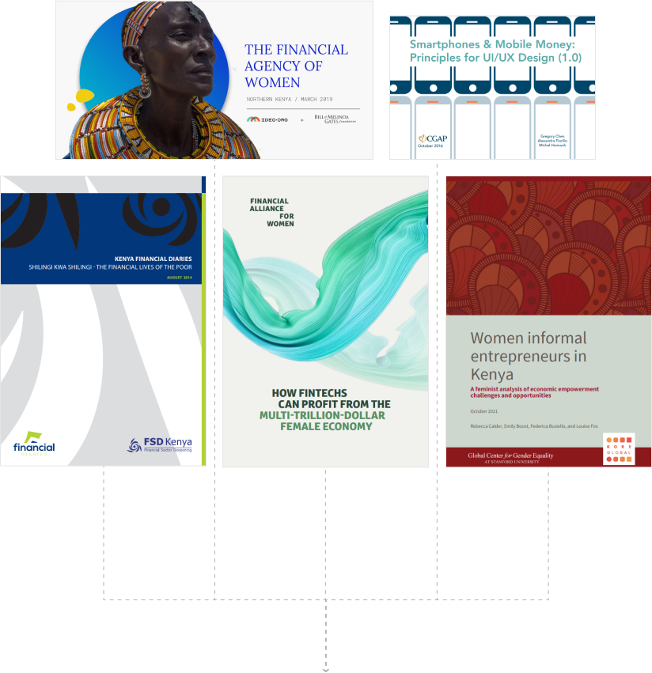
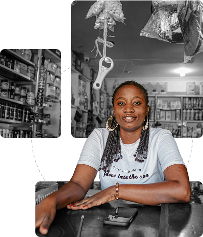

The Challenge
Who is our user & what are their pain points?


The Solution
Using established best practices in context.
Match between the system and the real world.
Using Kiswahili and relatable imagery within a traditionally English-dominant field helps humanise the platform as a representation of what happens day-today.
Nielsen’s Usability heuristic #2: